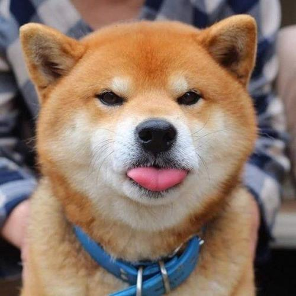
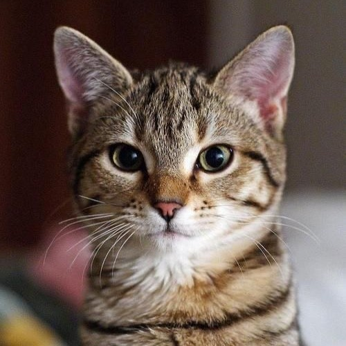
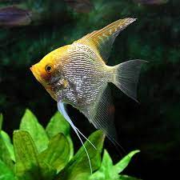
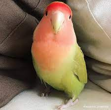
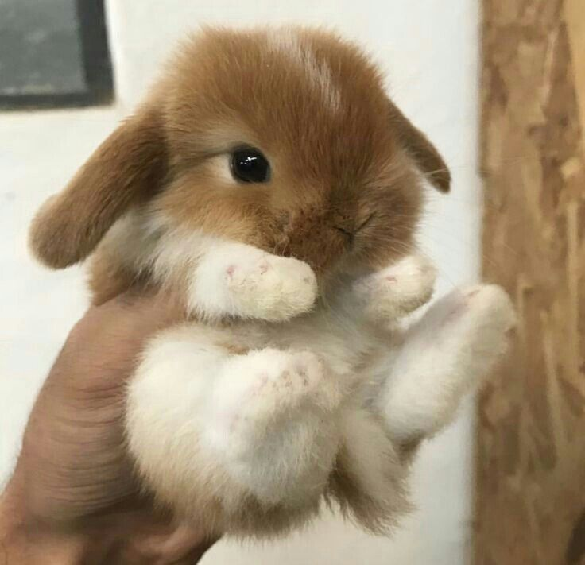
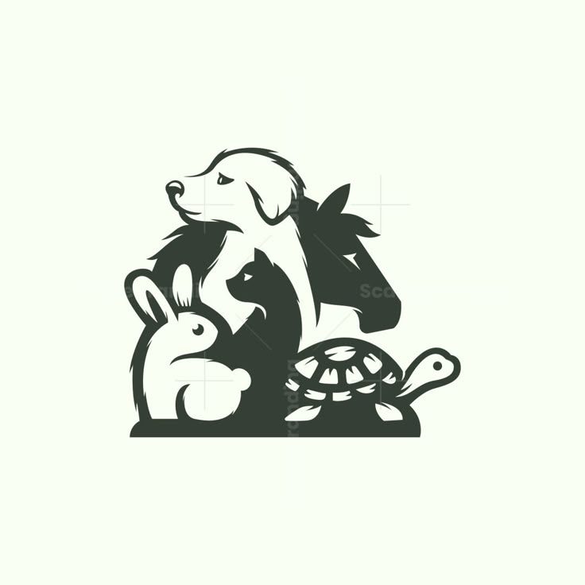

🐾 類別版區

🐶 狗狗版
分享毛孩的日常點滴、健康照護、訓練技巧與趣事交流。歡迎狗奴們一起來交流彼此的經驗，成為更棒的主人！

🐱 貓貓版
這裡是貓奴的天堂。無論是萌照、主子習性、罐罐挑選或貓咪健康問題，都能找到你的夥伴。

🐟 魚魚版
從觀賞魚缸設計到水質維護，無論是鬥魚、金魚或熱帶小魚，這裡是愛魚人士的聚集地，讓我們一起探尋海底的奧妙。

🐦 鳥類版
鸚鵡、鴿子、文鳥、八哥等羽毛寶貝的飼養知識、互動訓練與日常點滴，一起打造愛鳥樂園。
🐹 鼠鼠版
倉鼠體型雖嬌小，但魅力無限。從籠舍設計、飲食建議到繁殖知識，一起讓鼠寶過上幸福生活。

🐰 兔子版
溫馴又可愛的兔兔，是許多家庭的最愛。討論飼養技巧、健康照護與品種特色，一起打造兔兔的天堂！

🌈 其他寵物
歡迎養刺蝟、蜜袋鼯、青蛙等特別小動物的你！想曬自己的寶貝嘛！這裡是非主流寵物交流的溫暖角落。